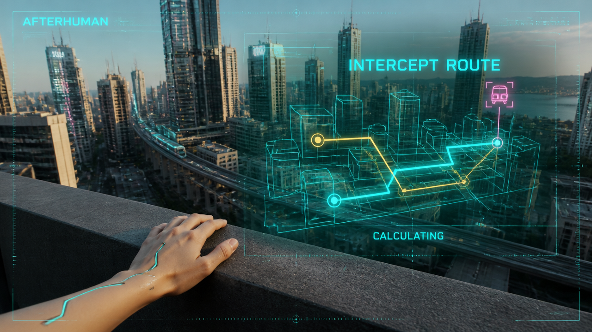
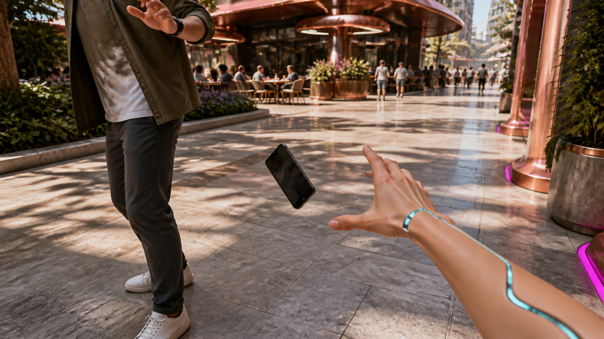
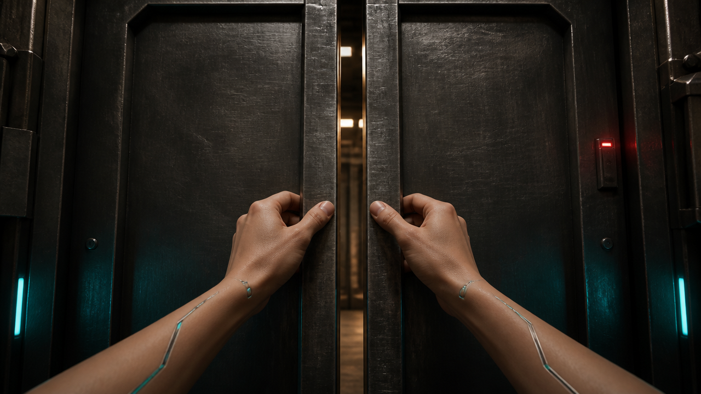
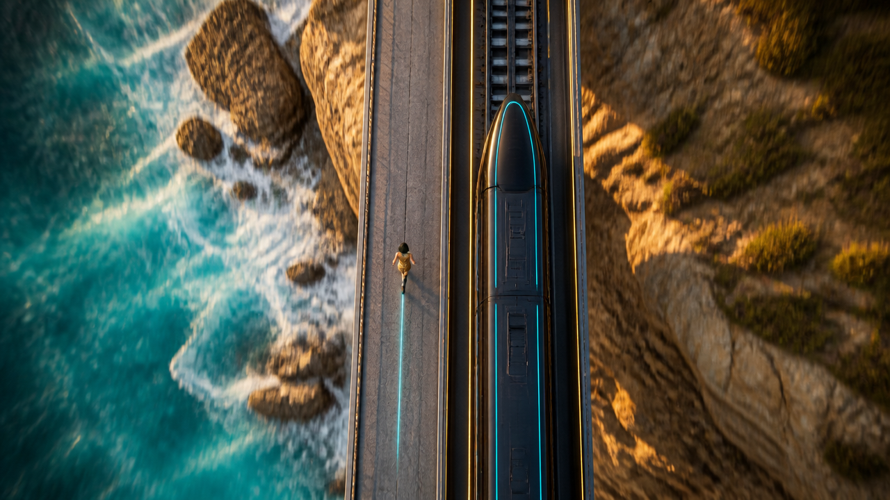

08 — Intelligence / rooftop HUD
City rooftop terrace

Visible integrated cyan HUD with legible AFTERHUMAN, INTERCEPT ROUTE and CALCULATING text. Cyan selected route, amber alternate routes and magenta train target appear over a distinct rooftop city view. First-person left hand has mostly natural skin and thin chrome/cyan inlays.
What still needs testing
- Map is a compositional concept, not a validated or tracked geographic route.
- HUD resolution/animation and final text should be controlled in the edit; no moving HUD proven.
09 — Reflexes / café phone drop
Outdoor café street

One phone is clearly airborne between the stranger and Riley, with neither hand touching it. The stranger's hand is above/left; Riley's right hand reaches from bottom-right. Outdoor copper-accented café plaza creates a distinct location.
What still needs testing
- A still cannot establish whether the phone is falling versus tossed; the video must begin with downward rotation, no exchange motion.
- Riley's hand is already extended; animation needs a decisive fast catch rather than slow reaching.
- Time-dilation sound plan is documented, not generated or mixed.
10 — Strength / first-person steel doors
Industrial service corridor

Two naturally proportioned hands grip opposing metal door edges directly ahead; no external view of Riley or extra person. Natural skin, slim chrome/cyan inlays, paired perspective and continuous wrists replace the isolated stretched boulder-arm arrangement. Heavy dark steel door leaves remain nearly closed around a narrow central gap, with warm light behind and cyan side lights/red status indicator. Beginning grip is established before substantial metal deformation or corridor reveal.
What still needs testing
- More forearm is visible than the requested 8–12 cm; the image does not establish metric anatomy. User judgement of POV/proportions remains pending.
- Buckling steel, effortless force, hand-contact continuity and the full reveal must be tested in motion.
- No sound design generated or independently verified.
11 — Speed / city boulevard
Open city boulevard
First-person arm drive on an open futuristic boulevard. Strong edge/parallax blur and directional cyan/magenta streaks establish a speed visual. Central forward route is clear; no station/train/head-on geometry.
What still needs testing
- Motion blur in a still does not prove convincing sprint speed; animation must provide rapid foreground displacement and arm action.
- A clean or less-blurred anchor may be useful if the video model turns this into static blur; no additional image made.
12 — Payoff / aligned coastal race
Coastal railway viaduct

Top-down coastal railway has train lengthwise and parallel to the visible rail corridor. Train nose points toward image top; carriages extend to bottom. Gold-clad Riley is on the separate left lane, facing top, behind the train nose, with a cyan trail behind downward.
What still needs testing
- Correct starting arrangement does not establish a completed overtake; both must move upward and Riley must gain during animation.
- Distant scale prevents detailed face/cyberware likeness assessment; outfit silhouette is approximate.